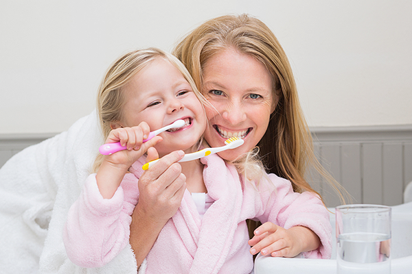

엄마들이 알아야 할 치아 상식
올바른 칫솔질 등의 구강관리 습관은 부모, 특히 엄마에 의해 형성된다고 합니다. 때문에 엄마의 보건 상식이 높을수록, 엄마의 양치질 빈도가 많을수록, 치과에 내원한 적이 많을수록 자녀의 충치 발생률이 적은 것으로 나타났습니다.
0~3세
대부분 6개월 이후부터 치아가 맹출 하기 시작합니다. 맹출 과정에서 무언가를 만지고 입 속에 넣으며 세균에 노출이 된답니다. 때문에 만지는 모든 물건은 수시로 소독을 해주는 것이 매우 중요합니다. 소독만큼 중요한 것이 뽀뽀 등의 스킨십을 통해 세균에 감염되지 않도록 합니다.
3~7세
보통 3세쯤 완성되는 유치는 빠지는 치아로 생각해 관리가 소홀해집니다. 유치의 손상도가 심할 경우 영구치의 형태 변형과 가지런하지 못한 치열로 증상이 나타날 수 있습니다. 치아는 맹출 순서가 어느 정도 정해져 있는데 손상된 유치로 인해 제때 맹출 되지 못한다면 이후에 부정교합이 생길 수 있답니다. 때문에 곧 뽑아낼 유치라고 하더라도 항상 꼼꼼한 관리가 필요합니다.
13~15세
이 시기에는 혼합치열기에서 영구치가 완성됩니다. 유치와 영구치가 교체되는 과정에서 치아가 바르게 자라지 않아 치아 교정 치료를 시도하기도 합니다. 이 시기를 놓치게 될 경우 치료기간이 더 길어질 수 있고 후에 다른 문제점이 잇따를 수 있어 적절한 시기에 치료를 맞추어주는 것 또한 부모님의 역할입니다.